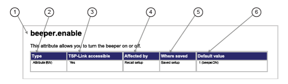

|
|
|
Command name and summary table
Each instrument command description starts with the command name, followed by a table with relevant information for each command. Definitions for the numbered items in the figure below are listed following the figure.

- Instrument command name. Signals the beginning of the command description and is followed by a brief description of what the command does.
- Type of command. Options are:
- Function. Function-based commands control actions or activities, but are not always directly related to instrument operation. Function names are always followed by a set of parentheses, for example,
digio.writeport(15). If the function does not need a parameter, the parentheses set remains empty, for example,exit(). - Attribute (R), (RW), or (W). Attribute-based commands set or read the characteristics of an instrument feature or operation by defining a value. For example, a characteristic of a TSP‑enabled instrument is the model number (
localnode.model); another characteristic is the number of errors in the error queue (errorqueue.count). For many attributes, the defined value is a number or predefined constant. Attributes can be read-only (R), read-write (RW), or write-only (W), and can be used as a parameter of a function or assigned to another variable. - Constant. A constant command represents a fixed value when used in a script.
- Function. Function-based commands control actions or activities, but are not always directly related to instrument operation. Function names are always followed by a set of parentheses, for example,
- TSP-Link accessible. Yes or No; indicates whether or not the command can accessed through a TSP-Link network.
- Affected by. Commands or actions that have a direct effect on the instrument command.
- LAN restore defaults
- Recall setup
- Instrument reset: An instrument reset can be invoked by
reset(),localnode.reset(), or*RST.
- Where saved. Indicates where the command settings reside once they are used on an instrument. Options include:
- Not saved: Command is not saved anywhere and must be typed each time you use it.
- Nonvolatile memory: Storage area in the instrument where information is saved when the instrument is turned off.
- Saved setup
- Default value: Lists the default value or constant for the command. The parameter values are defined in the Usage or Details sections of the command description.
Copyright (c) 2007-2012, Keithley Instruments, Inc. All rights reserved.